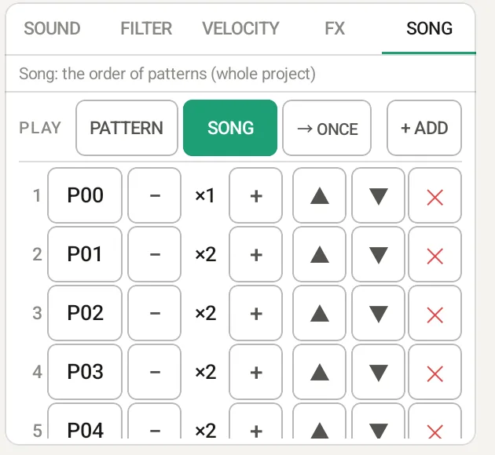
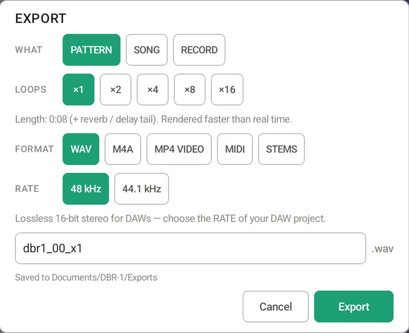

DBR-1
クイックスタート — 音を鳴らすところから、1 曲できあがるまで
上から順にやると、1 曲作って動画で共有するところまで進めます。くわしい説明は 取扱説明書 にあります。
まちがえても大丈夫です。画面の上の ↶ で 1 つ前に戻せます。
まちがえても大丈夫です。画面の上の ↶ で 1 つ前に戻せます。
- トラック = 1 つの楽器（キック・スネアなど）
- ステップ = 音を置くマス（1 小節に 16 個）
- パターン = くり返すフレーズ（00〜99）
- ソング = パターンを並べた 1 曲
「スマホ:」はスマートフォンでの操作です。
1デモ曲を聴く
まずは DBR-1 だけで作った曲を聴いてみましょう。
- 左上の LOAD を押す （スマホ: ≡ の LOAD）
- Demo songs… を選び、聴きたい曲の LOAD
- ▶ で再生。もう一度押すと止まります

聴き終わったら、LOAD の New project… でまっさらな状態に戻せます。
2音を鳴らす
パッドを叩いて、どんな音が入っているか確かめます。
- 右側の 16 個のパッドを叩く （スマホ: 左の PADS）
- 左のトラック名をタップしても、その音が鳴ります
- A / B で、残りの 8 つのトラックに切り替わります

3打ち込んでみる
マスをタップして、リズムを作ります。
- ▶ で再生しておく
- kick の行の 1・5・9・13 番目のマスをタップ → 「ドン・ドン・ドン・ドン」
- snare は 5・13、hat は全部のマスを横になぞると一気に入ります
- 速さは右上の BPM の数字をタップして変えます

点いているマスをもう一度タップすると消えます。マスを長押ししたまま上下に動かすと、音の強さが変わります。
4テンプレートのリズムを呼び出す
何を打てばいいか迷ったら、ジャンルの定番から始めましょう。
- LOAD → Templates…
- ジャンル（Hip-Hop・House・Techno など）を選ぶ
- BASIC（基本形）を選ぶと、今のパターンにリズムが入ります
ALL 3 を選ぶと、BASIC・VARIATION（少し変えた形）・FILL（おかず）の 3 つが続けて入ります。手順 8 のソングでそのまま使えます。
5キットの音を変える
トラックの音を、好きな音に入れ替えます。
- 変えたいトラックの名前をタップして選ぶ
- SOUND タブの SOUNDS… を押す （スマホ: 左の SOUND）
- ▶ で試聴し、気に入った音の名前をタップすると入れ替わります

上のタブの PRESET・DEMO に、たくさんの音があります。
5-Aサンプリングしてみる
声や身の回りの音を録って、トラックの音にします。
- SOUNDS… の画面で ● Record…
- ● REC で録音、■ STOP で止める
- 波形の黄色いつまみを動かして、使う部分を選ぶ（TRIM で前後の無音を自動で切れます）
- Use on A01 のように表示されたボタンで、トラックに入ります

5-Bジェネレートしてみる
波形を組み合わせて、自分だけの音を作ります。
- SOUNDS… の画面で ✦ Generate… （スマホ: ✦ GEN）
- WAVE A で元の音を選ぶ（BASS・PIANO・KICK など）。🎲 RANDOM でおまかせもできます
- KEY で音の高さやコードを選ぶ
- USE → EDIT… → Use on … でトラックに入ります
6オートメーションを描いてみる
音の動きを線で描きます。ここでは音を左右にゆらしてみます。
- 上の AUTO を押す （スマホ: 左の AUTO）
- 動かしたいトラックを選び、パラメーターの一覧から PAN を選ぶ
- WAVE → SIN を選び、右の面を上下になぞる
- ▶ で再生すると、音が左右にゆれます

描いた線は、長押ししてからなぞると消せます。FREE にすると、指で自由に描けます。
7パターンを増やす
曲にするために、少し違うパターンを作ります。
- 上のパターン番号（00）をタップ → Duplicate to next empty で、今のパターンが次の番号に写ります
- 写した方のマスを少し足したり消したりして、変化をつける
パターン番号の ◀ ▶ で、パターンを切り替えられます。
8ソングを作る
パターンを並べて、1 曲にします。
- 右下のタブの SONG を開く （スマホ: 左の SONG）
- + ADD でパターンを選び、順番に並べる（例: 00 → 00 → 01）
- − + で、それぞれ何回くり返すかを決める
- PLAY: SONG にして ▶ で、最初から最後まで流れます

9ソングを書き出す
できた曲を音のファイルにして、聴いたり送ったりします。
- SAVE → Export / record video… （スマホ: ≡ の中）
- WHAT で SONG、FORMAT で M4A（送るなら）か WAV（編集するなら）
- Export → 終わったら Share で LINE・メールなどへ

10プレイを録画する
演奏している画面を、音つきの動画にして SNS に投稿できます。
- 同じ Export / record video… で、WHAT を RECORD、FORMAT を MP4 VIDEO
- ● Start recording を押して、自由に演奏する
- 終わったら左上の ■ STOP → Share で X・Instagram・TikTok などへ
触れた場所が丸で映るので、どう操作したかが伝わります。通知やほかのアプリは映りません。
✓保存する
作った曲は、名前をつけて残しておきましょう。
- SAVE → Project （スマホ: ≡ の SAVE）
- 初めてのときは、保存するフォルダを 1 回だけ選びます
- 名前を入れて OK
次からは LOAD → Project で続きから作れます。
ここまでできたら、もっといろいろ試してみましょう。エフェクト（FX）・パフォーマンス画面（PERF）・MIDI などは 取扱説明書 で説明しています。